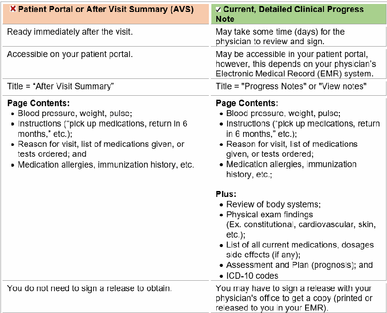

23. Pilot Information – Current Detailed Clinical Progress Note
(Updated 03/30/2022)
In the course of the certification process, the pilot may be asked to provide a current detailed Clinical Progress Note performed within 90 days of the exam from the treating physician. In some instances, the specialty of the physician will be specified (ex. cardiologist or neurologist, etc.). A current detailed Clinical Progress Note must include a summary of the history of the condition; current medications, dosages, and side effects (if any); clinical exam findings; results of any testing performed; diagnosis; assessment; plan (prognosis); and follow-up. Based on the condition, we may require additional, specific criteria.
If the pilot submits patient information from the patient portal or an “After Visit Summary (AVS)” instead of an actual detailed clinical progress note, it may NOT address all of the information the FAA needs to review the application for medical certification. The review process will be significantly delayed if incorrect or incomplete information is submitted. To avoid this, refer the pilot to the Pilot Information – Current Detailed Clinical Progress Note sheets on the following pages.
NOTE: Any reference to a “current status report” or “status report’ is a request for a current detailed Clinical Progress Note as described above.
PILOT INFORMATION – CURRENT DETAILED CLINICAL PROGRESS NOTE
(Updated 09/25/2024)
The FAA requires a current, detailed Clinical Progress Note to determine your eligibility for a FAA Medical Certificate. If you ask your physician's office for a copy of your progress note, they may direct you to your patient portal to print out “notes” or an “After Visit Summary (AVS).” Patient Portal notes or an AVS that do not meet the criteria listed below for a detailed Clinical Progress Note are NOT sufficient for FAA purposes. Submitting incorrect or incomplete information will delay your medical certification review. To help avoid this, please review the information provided below.
You may wish to share this with your treating physician, so they are aware of the information is reviewed by FAA medical personnel including physicians with expertise in aerospace medicine and a variety of specialties/subspecialties “(such as ENT, ophthalmology, surgery, neurology, neuropsychology family medicine, internal medicine, and cardiology.) Here is how to tell the difference between patient portal notes or AVS vs a current, detailed Clinical Progress Note:
WHEN YOU SEE THIS: | IT MEANS THIS TO FAA Aerospace Medicine: | |
|---|---|---|
CURRENT | To be “current,” in MOST CASES, the detailed Clinical Progress Note should be from an evaluation in which you saw your treating physician no more than 90 days ago. (*FAA ATCS clearance exams correlate with birth month, so the treating physician evaluation should be within 90 days of birth month.) | |
DETAILED In some instances, the specialty of the physician will be specified (ex. Cardiologist or neurologist, etc.) | This information is standard in most clinical progress notes. (e.g., Medicare standards ). It Must include the following items:
Please note: A letter stating, “Mr. Smith is ok to fly” (or any other simple note), is NOT a current, detailed Clinical Progress Note and is NOT acceptable. | |
CLINICAL | Describes findings from an actual clinical encounter (usually in office). | |
PROGRESS NOTE You may also see this called a “current status report” or “status report” in current FAA Guidance. Any reference to a “status report” equals the criteria listed on this sheet. | This is part of the actual medical record that details events of your office or hospital visit. Physicians and other providers understand this term. It may be called a SOAP note or patient note. It has specific components (see “Detailed” above). A patient “after visit summary” or “patient summary” are NOT sufficient for FAA purposes. To see if your note meets FAA requirements, see the previous page for a comparison between “patient portal or after visit summary” vs. current, detailed Clinical Progress Note. IT MEANS THIS TO FAA Aerospace Medicine: | WHEN YOU SEE THIS: |
“IT MUST SPECIFICALLY INCLUDE” | If this language is in your letter, it is to highlight SPECIFIC items (that may or may not be part of a standard current, detailed Clinical Progress Note). Make sure your physician addresses these specific items important for medical certification or clearance. |

Source: FAA Guide for Aviation Medical Examiners, PDF pages 34–36. Always check the official FAA version.